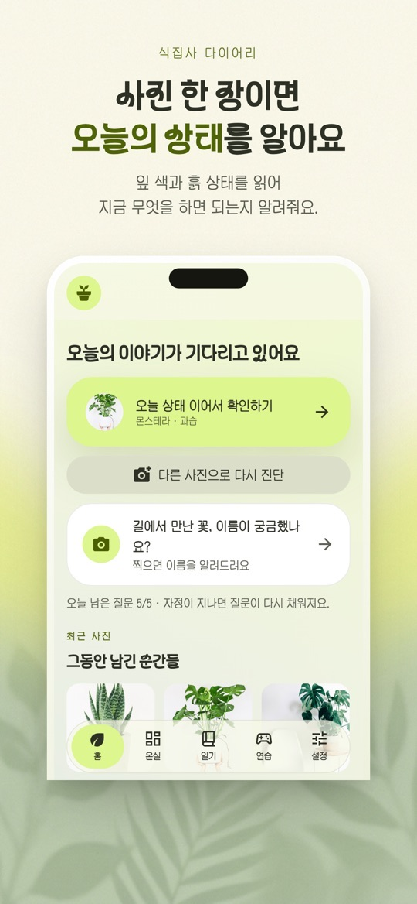
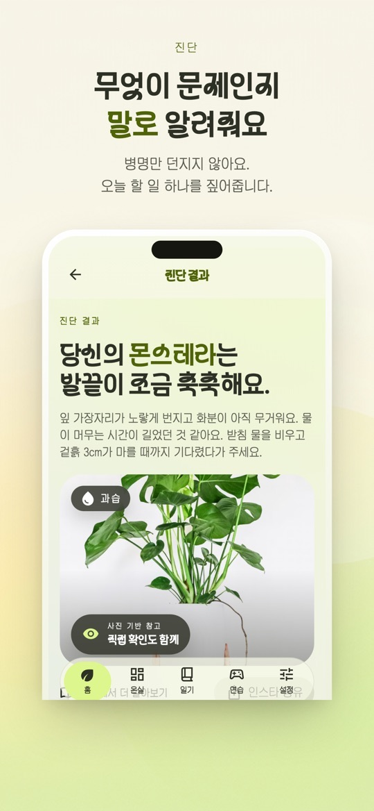
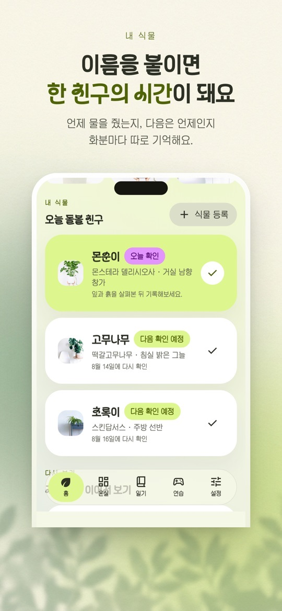
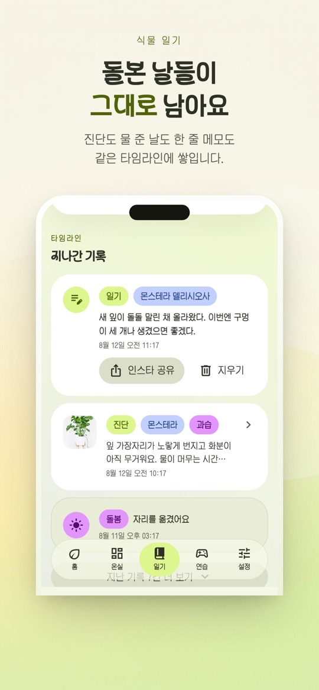

식물 사진을 찍으면 AI가 상태를 살펴보고 지금 해 주면 좋을 일을 알려 주는 식물 관리 앱입니다. 진단 뒤에 이어서 질문하고, 우리 집 식물의 물 준 날과 분갈이한 날을 기록할 수 있습니다.
무엇을 도와주나요
- 사진으로 상태 확인: 잎 색이 변하거나 시들했을 때 사진을 찍으면 문제로 보이는 점과 돌보는 방법을 알려 줍니다. App Store 설명은 식물 종류도 함께 살펴본다고 밝힙니다.
- 이어서 질문하기: 진단 결과를 보고 궁금한 점을 더 물어볼 수 있습니다. 하루 질문 횟수에 제한이 있고(App Store 설명 기준 하루 5번 무료), 광고를 보면 더 이용할 수 있습니다.
- 우리 집 식물 기록: 식물을 등록하고 물 준 날·분갈이한 날을 기록하면 다음에 살펴볼 때를 알려 줍니다. 물주기 알림을 지원합니다.
- 그림일기: 식물과 함께한 순간을 그림으로 남깁니다.
아이폰과 안드로이드의 차이
- 두 스토어의 설명과 버전이 다릅니다. App Store는 1.1.0(2026년 9월 4일), Google Play는 2026년 8월 27일 업데이트(1.0.2 안내)를 확인했습니다.
- App Store 설명에만 있는 기능: 산책·여행 중 만난 식물을 기록하는 발견 기록, 진단 뒤 짧은 이야기를 따라가는 이야기로 돌보기. 1.1.0 업데이트에는 물주기 알림이 되묻고 답을 다음 주기에 반영하기, 사진으로 벌레를 짚고 방제 방법 안내하기, 며칠 뒤 나아졌는지 다시 확인하기, 집을 비울 때 챙길 것 안내가 적혀 있습니다.
- Google Play 설명에만 있는 기능: 온실 커뮤니티, 키우기 연습, 식물 도감, 생일로 알아보는 나의 개운 식물. 로그인 없이 쓸 수 있고, 로그인하면 여러 기기에서 기록을 이어 볼 수 있다고 안내합니다.
- App Store 스크린샷의 아래쪽 탭은 홈·온실·일기·연습·설정입니다. 설명에 없는 기능이라도 기기와 버전에 따라 보일 수 있으니, 실제 앱 화면을 기준으로 삼아 주세요.
처음 시작하기
- 아래 스토어 링크에서 내 기기에 맞는 버전을 설치합니다.
- 홈에서 진단을 시작하고 식물 사진을 찍습니다. 잎 전체와 흙 상태가 보이게 찍는 편이 좋습니다.
- 진단 결과에서 문제로 보이는 점과 오늘 할 일을 읽습니다. 궁금한 점은 이어서 질문합니다.
- 계속 돌볼 식물이면 식물 등록으로 이름을 붙이고, 물 준 날을 기록합니다.
- 물주기 알림을 받고 싶다면 알림 권한을 허용합니다. 기록은 일기 탭의 타임라인에 쌓입니다.
돌볼 때 참고할 점
아래는 스토어 설명과 화면 안내를 바탕으로 한 사용 제안입니다. 진단은 사진 기반 참고이며, 식물의 회복을 보장하지 않습니다.
- 진단 뒤에 직접 확인하세요. 결과 화면에도 ‘사진 기반 참고 · 직접 확인도 함께’라고 적혀 있습니다. 예를 들어 과습이라고 나오면 화분 무게와 겉흙이 마른 정도를 손으로 확인해 보세요.
- 질문 횟수를 아껴 쓰세요. 홈에 남은 질문 수가 표시되고, 자정이 지나면 다시 채워진다고 안내합니다.
- 같은 각도로 다시 찍으면 비교가 쉽습니다. 기록이 같은 타임라인에 쌓이므로 비슷한 자리와 각도에서 찍으면 변화를 보기 좋습니다.
- 알림은 참고 시점입니다. 계절, 화분 크기, 놓인 자리에 따라 물이 마르는 속도가 다르니, 알림이 와도 흙 상태를 보고 판단하세요.
- 사람이나 반려동물 관련 판단에는 쓰지 마세요. 식물의 독성이나 섭취 안전처럼 중요한 판단은 전문 자료로 확인하세요.
스크린샷
App Store 한국 스토어에 게시된 공식 홍보용 스크린샷입니다(버전 1.1.0 기준, 홍보 문구 포함). 안드로이드 화면은 다를 수 있습니다.




자주 묻는 질문
- 진단 결과는 얼마나 믿을 수 있나요?
- 두 스토어 모두 진단 결과는 참고용이며 식물의 회복을 보장하지 않는다고 밝힙니다. 사진만으로 보이지 않는 뿌리 상태나 환경은 직접 확인해 주세요.
- 무료인가요?
- 무료로 설치할 수 있고 광고가 포함되어 있습니다. 하루 질문 횟수에 제한이 있으며 광고를 보면 추가로 이용할 수 있습니다.
- 로그인이 필요한가요?
- Google Play 설명은 로그인 없이 쓸 수 있고, 로그인하면 여러 기기에서 기록을 이어 볼 수 있다고 안내합니다. App Store 설명에는 로그인에 관한 문구가 없습니다.
- 스토어 설명에 있는 기능이 제 앱에 안 보여요.
- 아이폰과 안드로이드는 설명과 버전이 다릅니다. 먼저 앱을 최신 버전으로 업데이트하고, 그래도 없으면 위의 차이 목록을 참고해 주세요.
- 오류는 어떻게 알리나요?
- 화면 캡처와 함께 ricecookey.help@gmail.com으로 보내 주세요. 기기 모델과 앱 버전을 적어 주시면 확인이 빠릅니다.
스토어 링크
무료 앱(광고 포함)
iOS 16.0 이상, 연령 등급 4+(App Store 기준). Google Play 표시: 광고 포함.
문의
질문, 요청, 버그 제보: ricecookey.help@gmail.com
참고 자료와 확인 범위
- App Store 페이지 — 버전 1.1.0(2026년 9월 4일 배포), 설명·업데이트 내용·스크린샷
- Google Play 페이지 — 2026년 8월 27일 업데이트, 설명과 1.0.2 업데이트 내용
기능과 메뉴 이름은 2026년 10월 20일에 확인한 스토어 설명과 공식 스크린샷 문구를 따랐습니다. 업데이트로 달라질 수 있으며, 앱 안의 표시가 이 페이지보다 우선합니다.
English
Plants Keeper is a plant-care app: take a photo and its AI looks at the plant's condition and suggests what to do now. After a diagnosis you can ask follow-up questions and log watering and repotting for your own plants. The app is in Korean.
What it helps with
- Photo check: when leaves change color or droop, take a photo to see what looks wrong and how to care for it. The App Store description says it also looks at which plant it is.
- Follow-up questions: ask more about the diagnosis. Questions are limited per day (5 free per day according to the App Store description), and watching an ad gives more.
- Your plants: register plants and log watering and repotting days, and the app tells you when to check next. Watering reminders are supported.
- Picture diary: keep moments with your plants as illustrations.
iPhone and Android differences
- The two store descriptions and versions differ. We checked App Store 1.1.0 (September 4, 2026) and a Google Play update of August 27, 2026 (notes for 1.0.2).
- Only in the App Store description: discovery records for plants you meet on walks or trips, and story-based care after a diagnosis. The 1.1.0 notes add watering reminders that ask back and adjust the next cycle, pest spotting from photos with treatment tips, a follow-up check a few days later, and a checklist for when you are away.
- Only in the Google Play description: a Greenhouse community, growing practice, a plant encyclopedia, and a birthday-based “lucky plant”. It works without sign-in, and signing in lets you continue records across devices.
- In the App Store screenshots the bottom tabs are Home, Greenhouse, Diary, Practice and Settings (홈·온실·일기·연습·설정). Features can appear differently by device and version, so treat the app on your phone as the reference.
Getting started
- Install the version for your device from the store links below.
- Start a diagnosis from Home and take a photo of the plant. Showing the whole leaf and the soil helps.
- Read what looks wrong and today's suggested task in the result. Ask follow-up questions if needed.
- For a plant you keep, use Register plant (식물 등록) to name it and log when you watered it.
- Allow notifications if you want watering reminders. Your records build up on the Diary timeline.
Care notes
These suggestions are based on the store descriptions and on-screen text. Diagnoses are photo-based guidance and do not guarantee a plant's recovery.
- Check for yourself after a diagnosis. The result screen itself says it is photo-based guidance to confirm in person. If it says overwatering, feel the pot's weight and how dry the topsoil is.
- Spend questions wisely. Home shows how many questions are left, and the app says they refill after midnight.
- Reshoot from the same angle. Records share one timeline, so similar spots and angles make changes easier to see.
- Treat reminders as check-in times. Season, pot size and placement change how fast soil dries, so look at the soil when a reminder arrives.
- Don't use it for people or pet safety decisions. Check plant toxicity or ingestion safety with expert sources.
Screenshots
Official promotional screenshots from the Korean App Store (version 1.1.0, with marketing captions in Korean). Android screens may differ.
FAQ
- How reliable is the diagnosis?
- Both stores state that results are for reference and do not guarantee recovery. Check roots and conditions a photo cannot show yourself.
- Is it free?
- It is free to install and contains ads. Daily questions are limited, and watching an ad gives more.
- Do I need to sign in?
- The Google Play description says sign-in is optional and lets you continue records across devices. The App Store description does not mention sign-in.
- A feature from the store description is missing.
- The iPhone and Android descriptions and versions differ. Update to the latest version first, then check the differences listed above.
- How do I report a problem?
- Send a screenshot to ricecookey.help@gmail.com. Including your device model and app version speeds things up.
Store links
Free app (contains ads)
Requires iOS 16.0 or later, rated 4+ (App Store). Google Play shows: Contains ads.
Contact
Questions, requests and bug reports: ricecookey.help@gmail.com
References and scope
- App Store listing — version 1.1.0 (released September 4, 2026), description, release notes and screenshots
- Google Play listing — updated August 27, 2026; description and 1.0.2 notes
Features and menu names follow the store descriptions and official screenshot text checked on October 20, 2026. Updates may change them, and what the app shows takes precedence over this page.